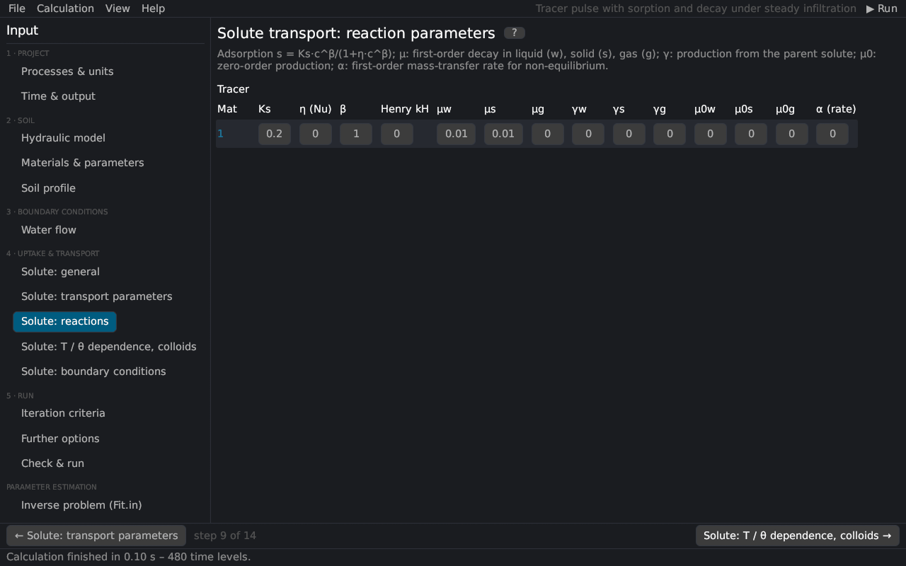

Input (pre-processing) › Solute transport
Solute transport: reactions
The reaction parameters per solute and material, the second part of the Solute Transport Parameters dialog of HYDRUS-1D (Solute Reaction Parameters). The equations are in solute transport.


Parameters
| Parameter | HYDRUS | Description |
|---|---|---|
| Ks | Kd | adsorption coefficient [L³/M] of the isotherm s = Ks cβ/(1 + η cβ); for linear sorption the distribution coefficient Kd |
| η | Nu | Langmuir coefficient [L³/M]; 0 = Freundlich or linear |
| β | Beta | Freundlich exponent [–]; 1 = linear |
| Henry kH | Henry | Henry's constant, g = kH c [–] (volatile solutes) Jury et al. (1983) |
| μw, μs, μg | SinkL1, SinkS1, SinkG1 | first-order decay constants in the liquid, solid and gas phases [1/T] |
| γw, γs, γg | SinkL1', SinkS1', SinkG1' | first-order production of this solute from the previous one (decay chain) [1/T] |
| μ0w, μ0s, μ0g | SinkL0, SinkS0, SinkG0 | zero-order production in the three phases [M/L³/T, 1/T] (negative values: zero-order decay) |
| α (rate) | Alfa | first-order rate of the non-equilibrium exchange: kinetic sorption sites (f < 1) or mobile–immobile water (θim > 0) [1/T] |
| αs | – | dual permeability: solute transfer coefficient between the fractures and the matrix [1/T] |
With dual non-equilibrium the columns μg and γg are reused: μg is the fraction fem of equilibrium sites in the mobile zone and γg the rate ωS of the kinetic sites, as in HYDRUS-1D. With the colloid model the columns are reused for the attachment parameters (colloids).
Hints
- For a conservative tracer leave all reaction parameters at 0 (Ks = 0, β = 1).
- The retardation factor of linear sorption is R = 1 + ρ Kd / θ.
- The half-life of first-order decay is t1/2 = ln 2 / μ.
See also: non-equilibrium transport · temperature and water-content dependence
Literature cited in this topic
- Jury, W. A., W. F. Spencer, and W. J. Farmer (1983). Behavior assessment model for trace organics in soil: I. Model description. Journal of Environmental Quality 12(4): 558–564. doi:10.2134/jeq1983.00472425001200040025x
All sources: References.